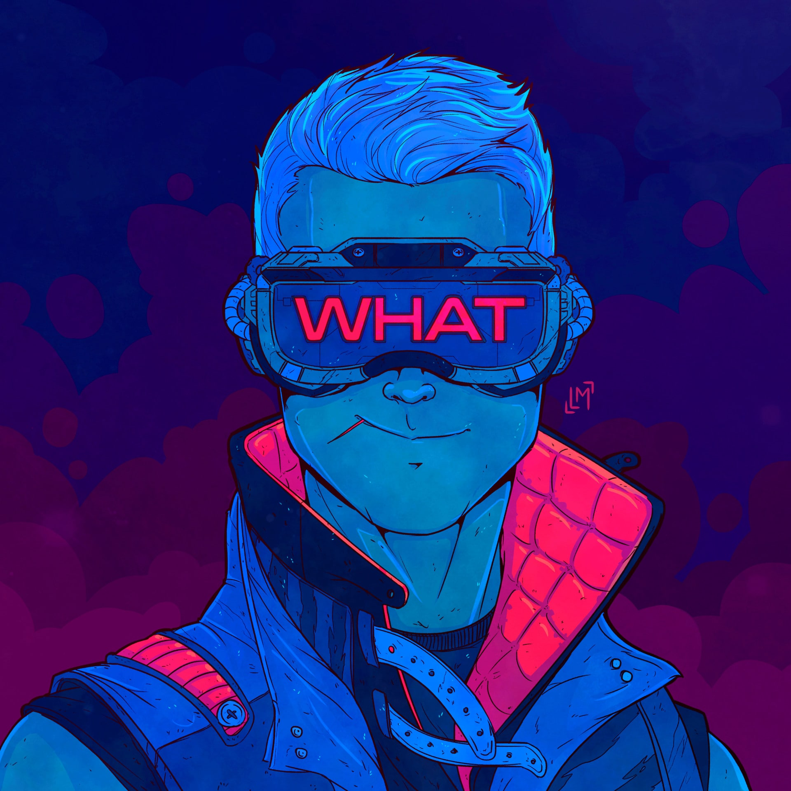

A virtual reality headset is a head-mounted device that provides virtual reality for the wearer. VR headsets are widely used with computer games but they are also used in other applications, including simulators and trainers. ... Some VR headsets also have eye tracking sensors and gaming controllers.
A man wearing the HTC Vive.
The Sega VR, announced in 1991 and seen in early 1993 at the Winter CES, was never released. An early VR headset, the Forte VFX1, was announced at CES in 1994. The VFX-1 has stereoscopic displays, 3-axis head-tracking, and stereo headphones. Sony, another pioneer, released the Glasstron in 1997, which has an optional positional sensor, allowing the wearer to view the surroundings, with the perspective moving as his head moves, giving a deep sense of immersion. These VR headsets gave MechWarrior 2 players a new visual perspective of seeing the battlefield from inside the cockpit of their craft. However, these early headsets failed commercially due to their limited technology and were described by John Carmack as like "looking through toilet paper tubes".
In 2012, a crowdfunding campaign began for a VR headset known as Oculus Rift; the project was led by several prominent video game developers, including John Carmack who later became the company's CTO.[9] In March 2014, the project's parent company Oculus VR was acquired by Facebook for US$2 billion. The final consumer-oriented release of Oculus Rift began shipping on 28 March 2016.
In March 2014, Sony demonstrated a prototype headset for PlayStation 4, which was later named PlayStation VR.[13] In 2014, Valve Corporation demonstrated some headset prototypes,[14] which lead to a partnership with HTC to produce the Vive, which focuses on "room scale" VR environments that users can naturally navigate within and interact with. The Vive was released in April 2016 and PlayStation VR in October 2016.
PlayStation VR, a VR headset designed exclusively for use with the PlayStation 4 video game console.
Virtual reality headsets and viewers have also been designed for smartphones. Unlike headsets with integrated displays, these units are essentially enclosures which a smartphone can be inserted into. VR content is viewed from the screen of the device itself through lenses acting as a stereoscope, rather than using dedicated internal displays. Google released a series of specifications and associated DIY kits for virtual reality viewers known as Google Cardboard; these viewers are capable of being constructed using low-cost materials, such as cardboard (hence the naming).
Samsung Electronics partnered with Oculus VR to co-develop the Samsung Gear VR (which is only compatible with recent Samsung Galaxy devices), while LG Electronics developed a headset with dedicated displays for its LG G5 smartphone known as LG 360 VR.
Asian hardware manufacturers like Xion and Kolke have developed inexpensive virtual reality headsets. In late April 2017, the Chinese company Tencent announced it was preparing to launch its virtual reality headset that year.
 Virtual reality headsets have been used for training United States soldiers of the army, air-force, and navy. It is a particularly useful tool for training soldiers without putting them in harm's way.
Virtual reality headsets have been used for training United States soldiers of the army, air-force, and navy. It is a particularly useful tool for training soldiers without putting them in harm's way.
The virtual reality headset allows the military personnel to interact with virtual reality people to make it feel real. They can talk to one another and do varying actions to make the virtual reality world feel like they are actually in that situation. There are also disadvantages and advantages when military personnel use the headset. The disadvantage is the headset is made for an indoor area, with a cool environment, and away from any heat, so when military personnel have just the headset on, no military equipment, it is not like their basic training. The advantages consist of repeating the situations multiple times and the cost of having the headset is less, due to no military equipment being needed.